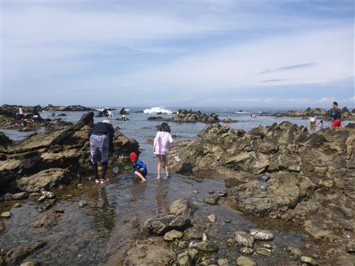
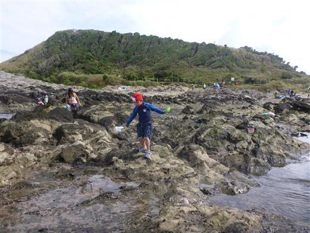
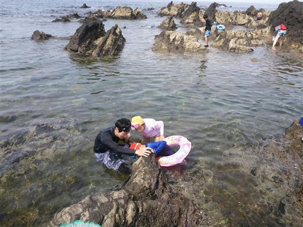
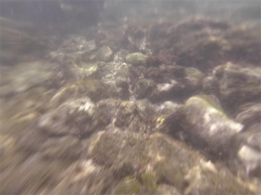
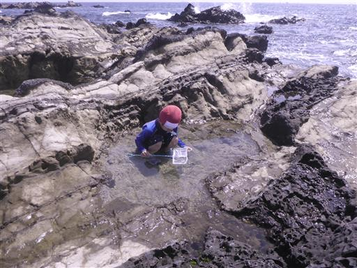
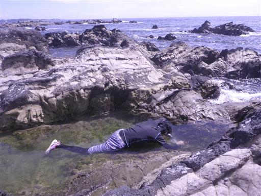
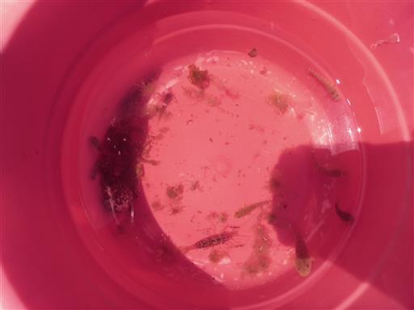
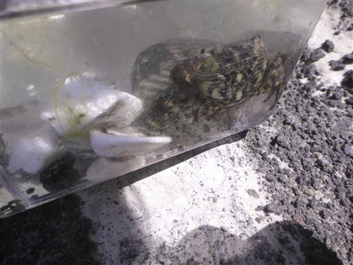

荒崎海岸
| 日付 | 2018年7月8日（日） |
|---|---|
| メンバー | 家族（妻、長女・7歳、長男・5歳） |
| アクセス | 車 |
西日本では豪雨があったが、早々と梅雨が明けた関東は
あまり雨が降らず蒸し暑い。
今年も例年同様、荒崎海岸に向かう。
8時に駐車場到着。少々列ができていたが、すんなり駐車できた。

早速、生物を探す。干潮で水は少なめだ。

少し水の中に入ってみる。まだ水は結構冷たい。
7月上旬なので仕方がないが…

息子は岩の上でも自由自在に移動できるようになった。

岩には穴がたくさんあって、そこに大きなカニが潜んでいる。
割りばしでカニを引きずり出している家族がいた。
次回からは海道具に割りばしも追加だ。

水は冷たいがシュノーケリングをしてみる。相変わらず水中写真は難しい。
下の方に狙った魚（カゴカキダイ？）が辛うじて写っている。

タイドプールでひたすら獲物を探す息子。
今年はハゼを数匹捕まえるのに成功していた。

大物を狙うも、今年も失敗。
岩に凹凸があって、すぐその中に隠れてしまう。

捕まえたハゼ、エビなど。

こちらはカニ。過去最大クラス。岩穴の中にはもっと大きなカニがいたのだが…
今年も楽しい海遊びができた。まだまだ夏は続くので、今年もう1回くらい海に行きたい。

他の記録